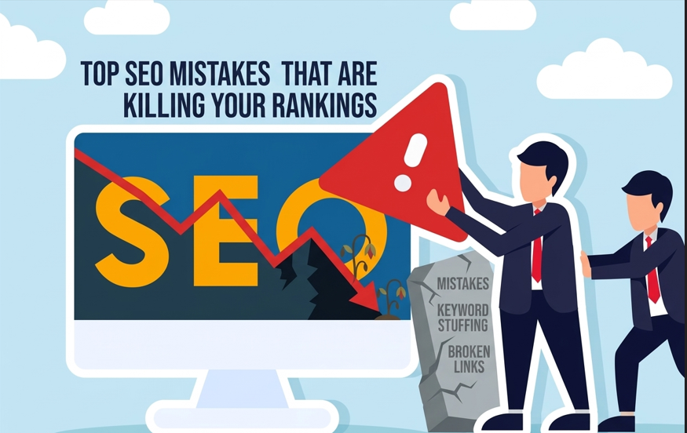

You've published dozens of pages, spent hours on keyword research, and waited patiently - yet your organic traffic is flatlining. The culprit? Silent, systematic SEO mistakes that Google's algorithm penalizes every single crawl. This guide exposes the exact errors draining your keyword rankings and shows you precisely how to fix them.
Mistake #1: Misunderstanding Search Intent - The #1 Rankings Killer
Every query typed into Google Search carries a hidden intent - informational, navigational, commercial, or transactional. When your content doesn't match that intent, Google RankBrain and Google Hummingbird detect the mismatch through behavioral signals like bounce rate and dwell time, then quietly demote your page in the rankings.
Thorough keyword research isn't just about monthly search volume. Tools like Ahrefs, SEMrush, and Ubersuggest reveal SERP features, intent patterns, and the dominant content format - list, guide, or video - that ranks for a given query. Align your content format and depth with the dominant search intent, and your click-through rate will climb naturally.
Quick Fix: Audit your top 10 landing pages inside Google Search Console. Compare the ranking URL's format against the live SERP. If they don't match, restructure your page - not your keywords.
Mistake #2: Keyword Stuffing and Content Cannibalization
Cramming the same phrase into every paragraph is classic keyword stuffing - a tactic that Google Panda has penalized since 2011. Modern semantic search and the Google Knowledge Graph understand topics and entities, not just keywords. Write for humans; use related entities and synonyms naturally throughout your content.
Equally dangerous is content cannibalization - having multiple pages chasing the same keyword. Google doesn't know which URL to rank, so it often ranks neither well. Run a technical SEO audit using Screaming Frog SEO Spider to identify overlapping pages, then consolidate them with a canonical tag or a 301 redirect. Merge thin, low-value posts into comprehensive content optimization hubs that demonstrate real topical authority.
Thin content and duplicate content also trigger penalties under the Google Helpful Content Update. If your page adds no original value or insight, it is a liability to your entire domain, not an asset.
Quick Fix: Use Yoast SEO or Rank Math to flag focus keyword overuse. Check Google Analytics for pages with high impressions but a low click-through rate - these are your cannibalization red flags.
Mistake #3: A Broken Technical SEO Foundation
No amount of great writing rescues a site that Google cannot crawl or index properly. Technical SEO errors silently block your visibility at the most fundamental level.
A misconfigured XML sitemap submitted through Google Search Console or Bing Webmaster Tools can exclude your most important URLs from indexing entirely. A single misplaced line inside your robots.txt file can accidentally block entire sections of your site from crawling. If your site still runs on plain HTTP instead of HTTPS, Google treats it as insecure - directly harming rankings and conversion rate optimization. Bad HTTP status codes like 404s and 500s waste your crawl budget and create dead ends for both users and search engines.
Missing structured data and schema markup also means you are invisible to rich result features, handing valuable SERP real estate to smarter competitors. Use Google Tag Manager to deploy schema at scale without relying on a developer for every update.
Quick Fix: Run a full SEO audit with Moz or Screaming Frog SEO Spider. Fix all 4xx errors, ensure HTTPS is applied site-wide, and validate your schema markup through Google's Rich Results Test tool.
Mistake #4: Failing Core Web Vitals and Mobile-First Indexing
Since Google moved to mobile-first indexing, the mobile version of your site is what gets ranked - full stop. If your mobile-friendly design is an afterthought, you are penalizing yourself on the majority of all searches conducted today.
Core Web Vitals are Google's official page experience signals, and they directly influence rankings. Largest Contentful Paint should be under 2.5 seconds - slow LCP from unoptimized images or render-blocking scripts destroys user experience. Cumulative Layout Shift should stay below 0.1, keeping users from being frustrated by unexpected layout jumps. First Input Delay should remain under 100 milliseconds, signaling a responsive and well-coded page.
Poor page speed doesn't just hurt rankings - it devastates your bounce rate and dwell time, the exact behavioral signals that Google RankBrain interprets as user satisfaction or dissatisfaction. Use PageSpeed Insights and Google Analytics together to benchmark and track these metrics on a weekly basis.
Quick Fix: Run your key URLs through PageSpeed Insights. Compress all images to WebP format, defer non-critical JavaScript, and deploy a CDN. Prioritize Largest Contentful Paint improvements first - they deliver the biggest ranking lift per unit of effort.
Mistake #5: Toxic Backlinks and a Weak Link Building Strategy
Backlinks remain one of Google's most powerful ranking signals, but quality has always trumped quantity. Google Penguin permanently changed the link building landscape - spammy tactics now trigger Google Spam Updates and can earn your site a manual action penalty that wipes out years of ranking progress overnight.
Toxic backlinks from low-authority, irrelevant, or penalized sites actively damage your domain authority and page authority. Monitor your backlink profile monthly inside Ahrefs or SEMrush, and use Google's Disavow Tool to neutralize harmful links before they trigger an algorithmic or manual penalty.
Pay close attention to anchor text distribution as well. An unnatural concentration of exact-match anchor text is a red flag to the Google algorithm. Build a healthy mix of branded anchors, naked URLs, DoFollow links, and NoFollow links for a natural-looking profile. Focus your off-page SEO services on earning genuine editorial mentions that drive real organic traffic and support lead generation goals.
Quick Fix: Export your full backlink profile from Ahrefs. Filter for low domain rating combined with low topical relevance. Disavow in bulk through Google Search Console, then redirect your link building budget toward high-authority local citations and niche editorial opportunities.
Mistake #6: Ignoring E-E-A-T, Entity SEO, and the AI Search Era
The biggest modern SEO mistake is treating optimization as a pure keyword game while Google has already shifted to an entity and trust-based ranking model. E-E-A-T - Experience, Expertise, Authoritativeness, and Trustworthiness - is the primary lens through which the Google Helpful Content Update evaluates every page on your domain.
Entity SEO and semantic search mean Google now maps your content directly against the Google Knowledge Graph. If your site doesn't clearly establish entities - who you are, what topics you own, and what your credentials are - you will consistently lose ground to sites that do.
With the rapid rise of Google AI Overviews, Generative Engine Optimization is no longer optional for forward-thinking SEOs. Your content must be structured, factual, and citation-worthy to be selected as a source inside AI-generated answers. This is where deep content quality, well-crafted title tags and meta descriptions, correct header tag hierarchy, descriptive alt text on every image, and strategic internal linking with intentional anchor text all converge into a single competitive advantage.
For local businesses specifically, ignoring Local SEO, leaving your Google Business Profile incomplete, maintaining poor NAP consistency across directories, and neglecting Google Maps SEO means losing high-intent local customers to better-optimized competitors every single day.
Quick Fix: Add a detailed author bio with verifiable credentials to every post. Fully complete your Google Business Profile with photos, categories, and weekly posts. Deploy FAQ schema on your key landing pages to target Google AI Overviews snippet opportunities directly.
Conclusion
SEO in 2026 rewards sites that are technically sound, semantically rich, genuinely authoritative, and fast on every device. Whether you are running an independent SEO audit, partnering with an SEO consulting firm, or scaling your on-page SEO services in-house, fixing these six mistake categories is the fastest path from invisible to unstoppable on Google, Bing, and Yahoo alike.
Your keyword ranking is not a mystery. It is the cumulative score of every technical, content, and authority decision reflected in this guide. Start auditing today - because your competitors already are.
Ready to Fix SEO Mistakes and Boost Your Rankings?
Don’t let hidden SEO errors hold your website back. Get a professional SEO audit to uncover critical issues affecting your rankings, traffic, and conversions. Fix them now and start growing your visibility on Google.